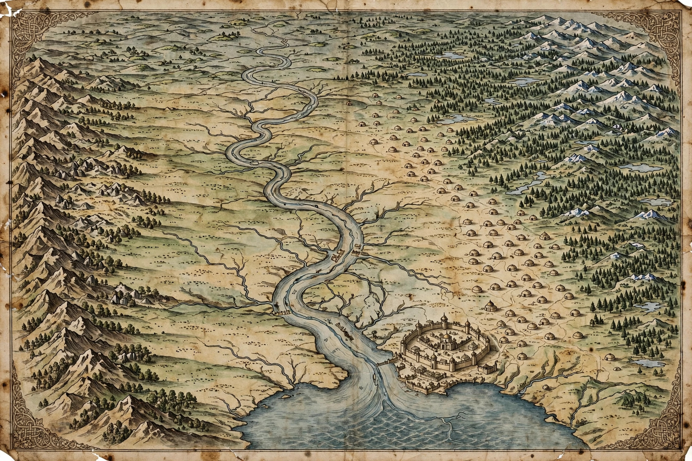

| Golden Horde Ulus of Jochi | |
|---|---|
 | |
| Status | Nomadic confederation; division of the Mongol Empire |
| Capital | Sarai (Batu, then New Sarai) |
| Established | 1240s |
| Disestablished | 1480 (fragmentation from c. 1440s) |
| Common languages | Kipchak Turkic; Mongolian (early period) |
| Religion | Tengrism & shamanism, later Islam |
| First khan | Batu Khan |
The Golden Horde was a Mongol and later Turkicised khanate established in the 13th century as the northwestern sector of the Mongol Empire. Founded by Batu Khan, a grandson of Genghis Khan, it ruled the Pontic-Caspian steppe, the Volga region, and — through tribute — the principalities of the Rus', functioning as a major Eurasian power for more than two centuries. The name derives from the Russian Zolotaya Orda, referring to the khan's golden tent or headquarters (orda).
The territory of the Horde corresponded to the Ulus of Jochi, Genghis Khan's eldest son. Under Jochi's son Batu, Mongol armies conquered the Volga Bulgars, the Kipchaks, and the Rus' principalities in 1237–1240 — the invasion remembered in Russian history as the beginning of the "Mongol yoke" — and raided as far as Hungary and Poland in 1241. Batu founded his capital at Sarai on the lower Volga. After the death of Möngke Khan in 1259, the succession struggles within the Mongol Empire left the Golden Horde effectively independent, and it soon fought open wars with the Ilkhanate of Persia over the Caucasus.
The Horde controlled the trade routes between Eastern Europe and Asia, taxing the commerce of the Black Sea ports, the Volga, and the caravan routes to Central Asia. Rus' princes travelled to Sarai to receive the khan's patent (yarliq) to rule and paid regular tribute. Khan Berke (1257–1266) was the first of its rulers to embrace Islam; under Öz Beg Khan (1313–1341) Islam became dominant and Sarai flourished as a great commercial city. The plague that became the Black Death spread westward through the Horde's territory, most famously from the siege of Genoese Kaffa in 1347.
From the 1360s the Horde was convulsed by succession wars (the "Great Troubles"). The warlord Mamai, its de facto ruler, was defeated by Dmitry Donskoy of Moscow at the Battle of Kulikovo in 1380 — a symbolic turning point, though Khan Tokhtamysh burned Moscow two years later. Tokhtamysh's wars with Timur in the 1390s devastated Sarai and the Horde's cities. In the 15th century the khanate splintered into successor states: the khanates of Kazan, Crimea, Astrakhan, and Siberia, and the Great Horde rump. The Great Stand on the Ugra River in 1480, when Ivan III of Moscow refused tribute, is traditionally taken as the end of Mongol domination of Rus'; the Crimean Khanate destroyed the Great Horde's remnants in 1502.
The Golden Horde shaped the political geography of Eastern Europe and the steppe: it fostered the rise of Muscovy as tribute-collector, transmitted administrative and postal practices, and left successor states whose histories intertwined with Russia, Poland-Lithuania, and the Ottoman Empire well into the 18th century.
See also: Batu Khan · Mongol Empire · Novgorod Republic · Crimean Khanate